ケアプランデータ連携で
提供票・実績をやりとりする
ほのぼのNEXT と「ケアプランデータ連携システム」を使って、居宅介護支援事業所とサービス事業所の間で、提供票（予定）と実績のデータを送る・受け取る手順です。
はじめに毎月の流れと、自分の作業
毎月、次の①〜④の順番でデータが行き来します。自分の事業所の作業だけ読めば大丈夫です。
- ① 居宅 ほのぼので提供票（予定）のデータを作り、送信準備ツールでまとめて、連携システムで送る
- ② サービス 連携システムで予定を受け取り、ほのぼのに取り込む
- ③ サービス ほのぼので実績のデータを作り、連携システムで送る
- ④ 居宅 連携システムで実績を受け取り、ほのぼのに取り込む
自分の作業を選んでください：
- ほのぼのNEXT と、ケアプランデータ連携システムが入ったパソコン（初期設定が済んでいるもの）
- 連携システムの 個人ユーザ と 事業所ユーザ のID・パスワード（本社から渡された一覧表）
- 相手の事業所の 事業所番号（10桁） と、対象の月
本社で用意したツールです。ほのぼので作った提供票のデータを、送り先ごとにまとめて、連携システムで一度に送れるようにします。
今のツールが使えるのは ① 居宅が予定（提供票）を送るとき だけ です。②〜④（受け取り・実績）では使いません。
- データ（CSVファイル）の 名前や中身を書きかえない。間違いがあったら、ほのぼのから出し直します。
- データには利用者さんの情報が入っています。USBメモリやメールで持ち出さないでください。
- ほのぼので「転送」と出てきますが、これは ほのぼのの中に反映する操作 です。相手に送る操作ではありません。
- このページの画面の絵は、ソフトの会社（公式）の見本です。名前・番号・年月は見本で、自社のデータではありません。青い A B の印は、下の説明と対応しています（黒い数字・赤い枠は公式の印です）。画像を押すと大きく表示できます。
共通ケアプランデータ連携システムにログインする
送る・受け取る、どちらの作業でも最初にこの操作をします。ログインは2回（個人 → 事業所）です。
1連携システムを開いて、2回ログインする
- デスクトップの ケアプランデータ連携システム のアイコンをダブルクリックします。
- AB 個人ユーザ のIDとパスワードを入れて、ログイン を押します。
- CD 次に 事業所ユーザ のIDとパスワードを入れて、ログイン を押します。
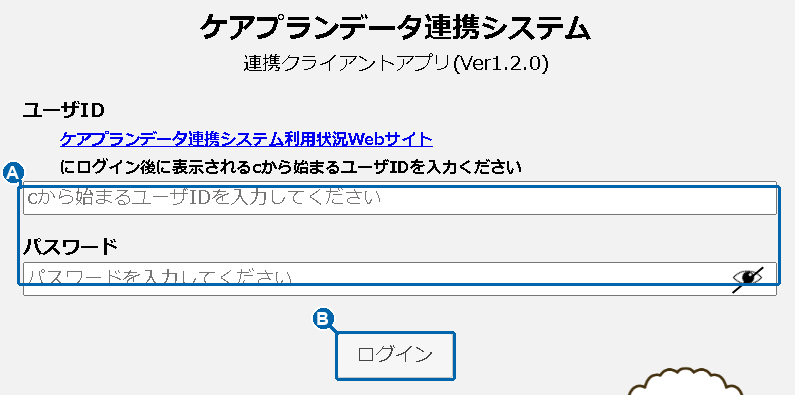
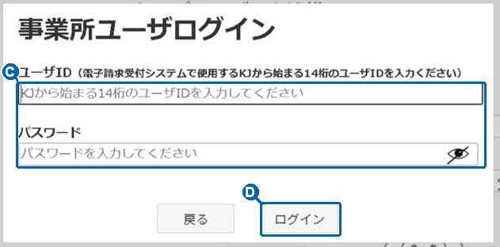
作業の途中で事業所のログイン画面が出たら、同じ事業所ユーザでログインします。IDがわからない・期限が切れたときは総務部へ連絡してください。
作業が終わったら、画面上の ログアウト を押して終わります。
作業
①居宅：提供票（予定）を送る
居宅 ほのぼのでデータを作る → ツールでまとめる → 連携システムで送る、の3段階です。
対象の月の 利用票 ができていること。福祉用具がある場合は、商品のTAISコードが登録されていること（TAISコードの登録マニュアル）。
1. ほのぼので、送るデータ（CSV）を作る
1提供事業所連携を開く
- AB メイン画面の ↓ → ケアマネ → 利用・提供票 → 提供事業所 を開きます。
- C 提供年月 に、送りたい提供票の月を入れます（「今月」ではなく、対象の月です）。
- D 提供事業所連携 を押します。
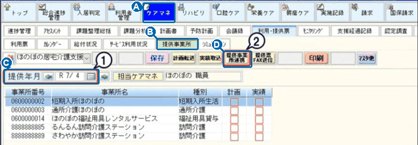
2送り先と利用者を選んで、CSV出力
- A 計画出力（介護） を選びます。予防の予定は 計画出力（予防） です。
- BC 自分の 支援事業所 と、送り先の 提供事業所番号 を選びます。
- D 対象の利用者の 「利用票」 の欄にチェックします（「計画書」ではありません）。
- E CSV出力 を押し、内容が正しければ OK を押します。
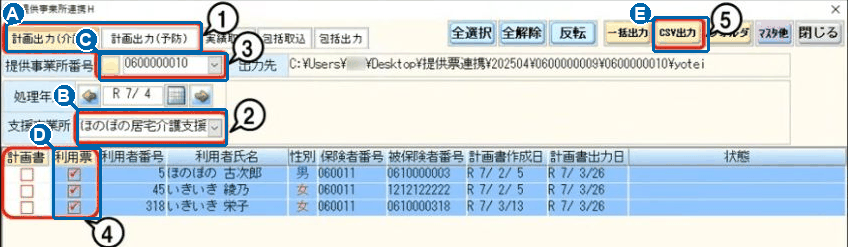
年月・両方の事業所・利用票ができているか を確認します。
3送り先ごとにくり返す
- 別の 提供事業所番号 に切りかえて、2 の操作をくり返します。
- A 確認したいときは、送り先を選んだまま フォルダ を押します。予定のデータは 「yotei」 というフォルダにできます。
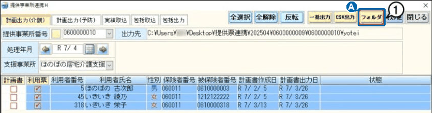
フォルダのパスをコピーして閉じる を押す → 黄色いフォルダの エクスプローラー を開く → 上の アドレスバー（右上の検索欄ではない）で右クリック → 貼り付け → Enter キー。
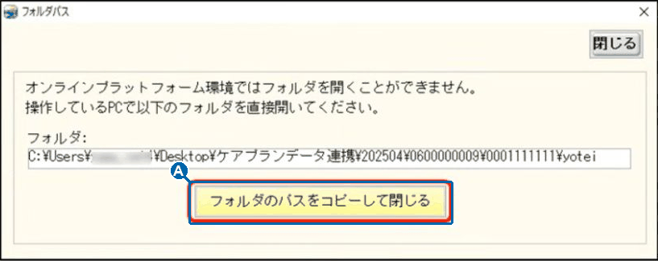
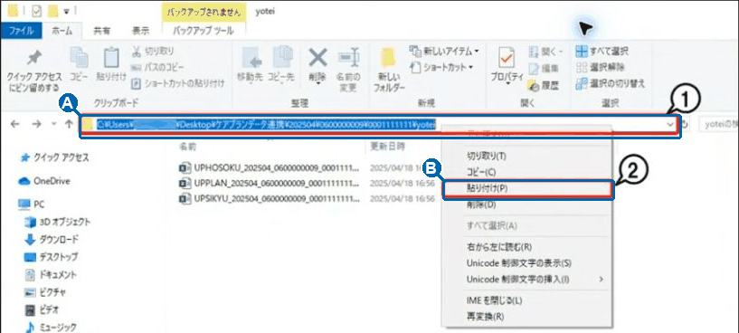
CSVを作っただけでは、まだ相手には届いていません。次へ進みます。
2. 送信準備ツールで、送るファイルをまとめる
4ツールを起動して、場所と月を入れる
- 「ケアプラン送信準備ツール」フォルダの ツールを起動.cmd をダブルクリックします（置き場所は下の本社記入欄）。
- 青の 1：保存場所を選ぶ を押し、ほのぼのでデータを保存した 親フォルダ（例：「提供票連携」）を選びます。
- 紫の 2：何月分か を6桁（例：2026年11月 → 202611）、送る側の居宅の事業所番号 を10桁で入れます。
- 送り先を一覧に出す を押します。
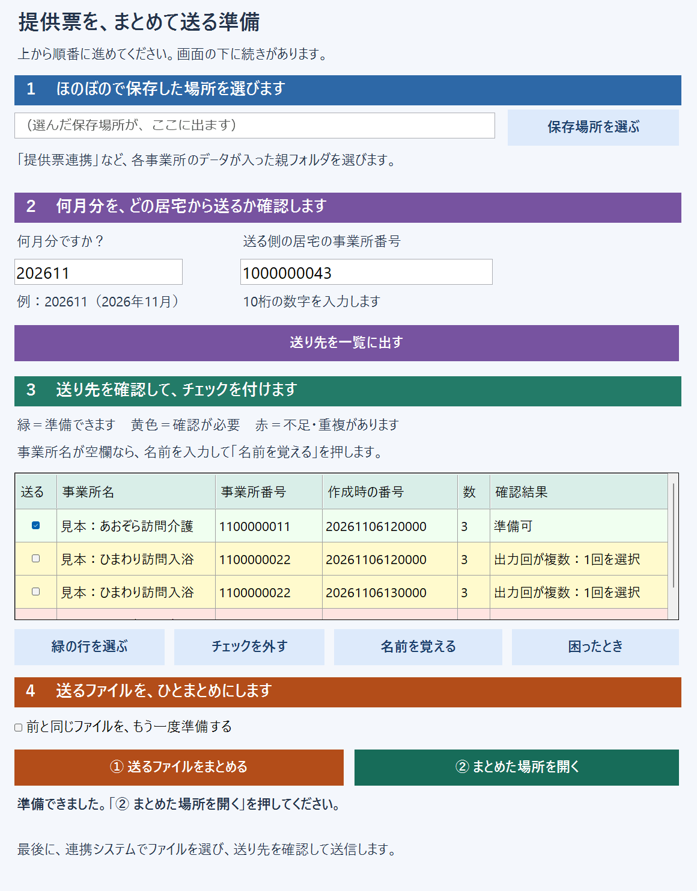
（ツールを置く場所が決まったら、ここに書きます）
5送り先を確認して、チェックを付ける
緑の 3 の一覧で、行の色を見ます。
- 緑の行（準備可）：そのまま送れます。最初からチェックが付いています。
- 黄色の行（出力回が複数）：ほのぼので何回か出力しています。どれを送るか担当者に確認して、1行だけ チェックします。
- 赤の行（不足・重複）：ファイルが足りません。ほのぼので出力し直すか、担当者に確認します。
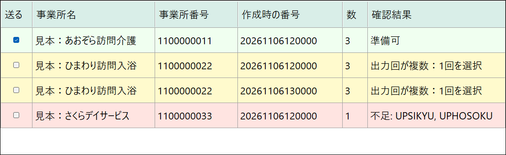
事業所名が空いているときは、その欄をダブルクリックして名前を入れ、名前を覚える を押します（次から自動で出ます）。わからないときは 困ったとき を押します。
6ファイルをまとめて、場所を開く
- オレンジの 4：① 送るファイルをまとめる を押します。
- 「準備できました」と出たら、② まとめた場所を開く を押します。
- 開いたフォルダ（添付用CSV）に、送るCSVが入っています。この画面は開いたままにします。
ツールの「準備できました」は、送信の完了ではありません。次の連携システムで送ります。
「前と同じファイルを、もう一度準備する」には、ふだんはチェックを付けません。
3. 連携システムで、まとめて送る（一括送信）
最初に 共通のログイン をします。
8「添付用CSV」の中のファイルを全部選ぶ
- A ツールで開いた 添付用CSV のフォルダを開きます。
- 中のファイルを全部選びます（Ctrl キーを押しながら1つずつクリック）。
- B 開く を押します。
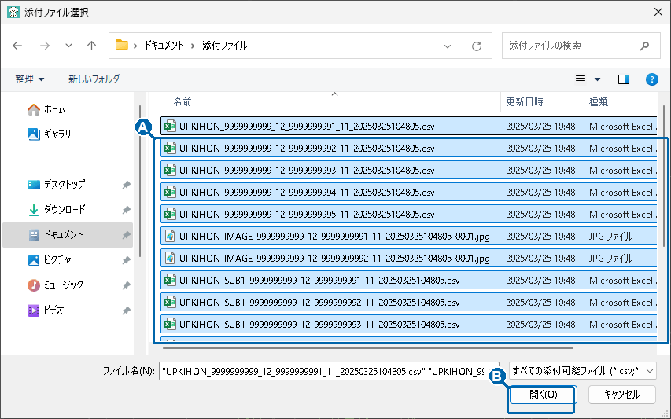
9宛先ごとの一覧を確認する
- A すべての行で、送信先の事業所番号・サービス種類・ファイル名 を確認します。
- 予定であること・対象の月・送る件数が合っているか確認します。
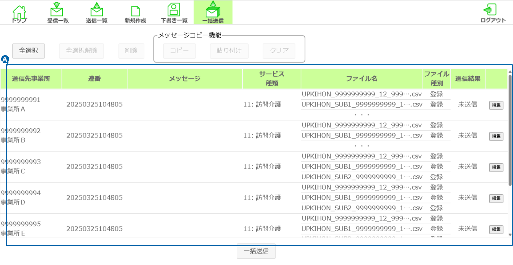
送らずに、ほのぼのの出力をやり直します。「ファイルエラー一覧を表示する」と出たら、押して原因を確認します。
11結果を確認する
- A 「送信完了」と、各行の成功・失敗を確認します。
- B OK を押します。成功した行は消え、失敗した行だけが残ります。
- 最後に 送信一覧 を開き、今回の送信日時・宛先・ファイル名があるか確認します（作業③の手順 9 と同じ画面）。
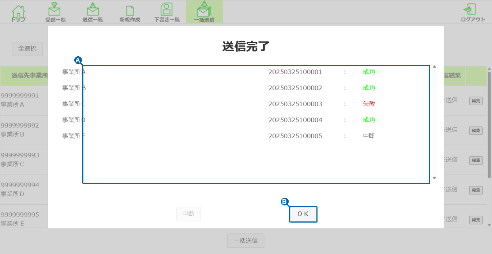
残った行の原因を確認します。成功した分まで 全部を送り直さない でください（二重に届きます）。
一括送信ではなく 新規作成 からでも送れます。やり方は 作業③ の「連携システムで送る」と同じです（選ぶファイルが予定の3種類になります）。
送信一覧に正しい宛先で出ていれば完了です。ログアウト して終わります。
作業
②サービス：予定を受け取って、ほのぼのに取り込む
サービス 連携システムで受け取る → ほのぼのに取り込む、の2段階です。
1. 連携システムで受け取る
最初に 共通のログイン をします。
1受信一覧を開いて「更新」
- A 画面上の 受信一覧 を開きます。
- B 画面下の 更新 を押します。ログインを求められたら事業所ユーザでログインします。
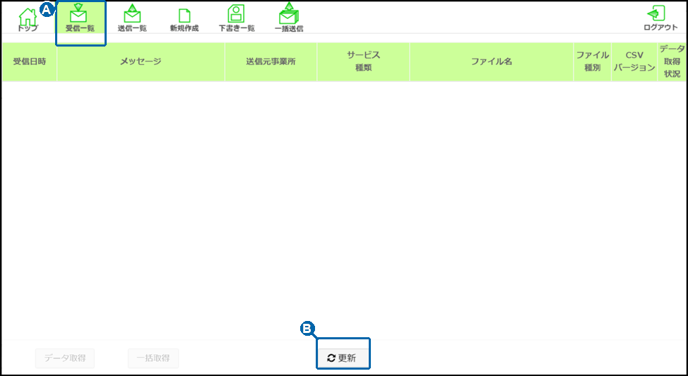
一覧を開いただけでは、パソコンに保存されていません。次の「データ取得」まで進めます。
2送ってきた事業所とファイルを確認
- 一覧の 青い受信日時 を押して、詳しい画面を開きます。
- A 送信元 が、受け取る予定の事業所か確認します。
- B ファイル名・メッセージで、対象の月・種類を確認します。
- C 戻る を押します。
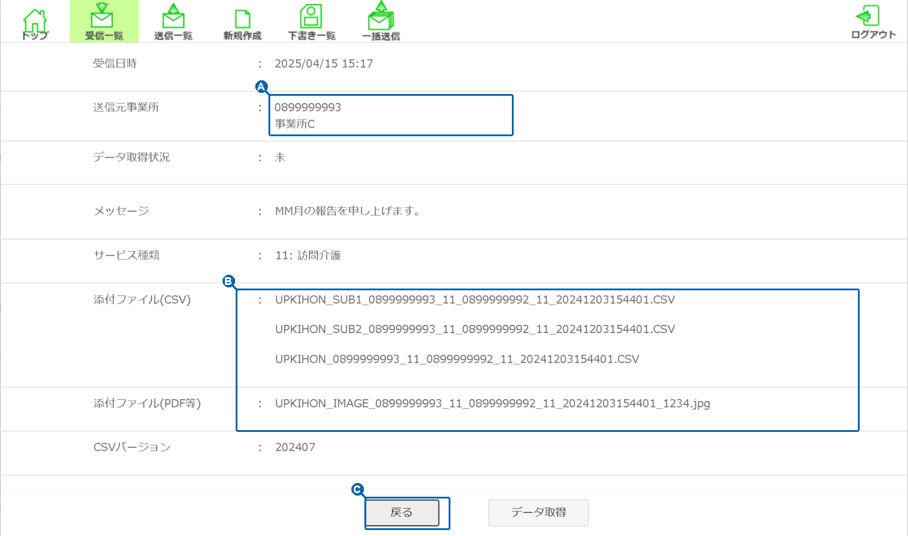
予定（作業②）：UPPLAN_・UPSIKYU_・UPHOSOKU_ で始まる3つ
実績（作業④）：UPJSK_ で始まるもの
違う種類や、心当たりのないものは取り込まず、送ってきた事業所に確認します。
3「未」の行を選んで「データ取得」
- C 右の データ取得状況 が 「未」 の行をさがします。
- A その行の、青い文字以外 の場所をクリックします（行が濃い緑になります）。
- B 左下の データ取得 を押します。
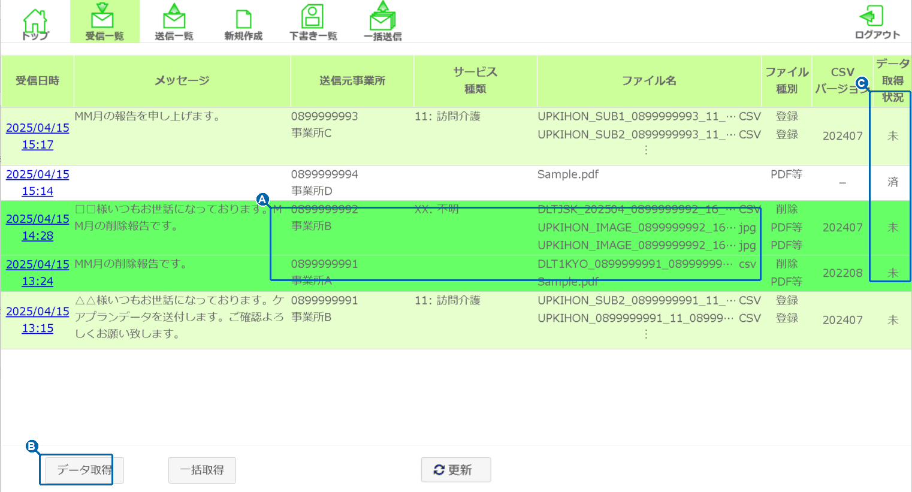
一度に選べるのは5件まで。「済」の行はもう一度は取れません。一括取得 は未取得の全部が対象になるので、ふだんは使いません。
5できたフォルダの中を確認
- 保存先に「受信日時14桁_送信元の事業所番号10桁」という名前のフォルダができています。開きます。
- 中に、手順 2 のファイル（予定なら3つ）が入っているか確認します。
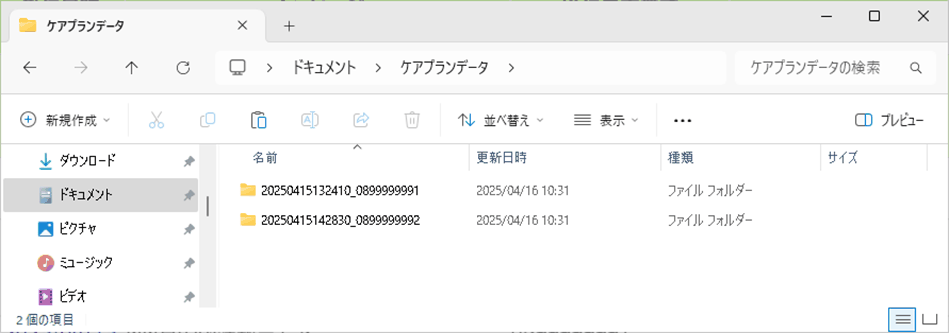
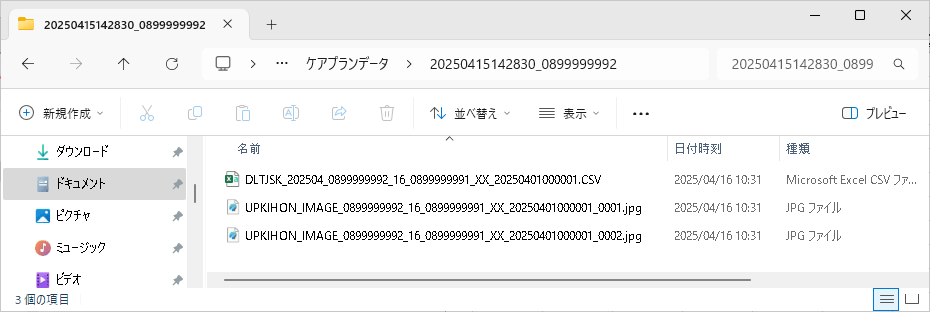
フォルダ名の日時は「受け取った日時」です。サービスを提供した月ではありません。
2. ほのぼのに取り込む
6CSVを「ルートフォルダ」にコピーする
- 受け取ったフォルダの 中のCSVファイル を、ほのぼので決められた取り込み用の大元のフォルダ（ルートフォルダ）にコピーします。
- フォルダごと入れない でください。CSVは3つ一組でコピーします。
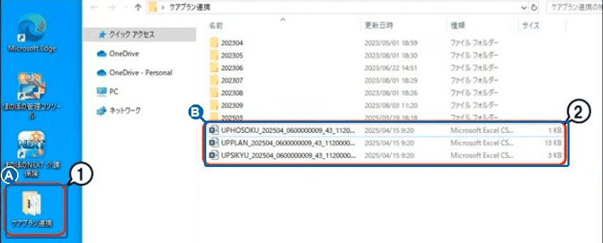
ほのぼのの「居宅支援連携H」→ マスタ他 → 動作設定 で確認できます。職員ごとの設定なので、ログインする職員が変わったときも確認します。
7提供票から「居宅支援連携」を開く
- ↓ → 利用状況 → 提供票（または 請求 → 算定 → 提供票）を開きます。
- A 処理年月 を、受け取った予定の月にします。
- B 居宅支援連携 を押します。「計画取込」の画面で操作します。
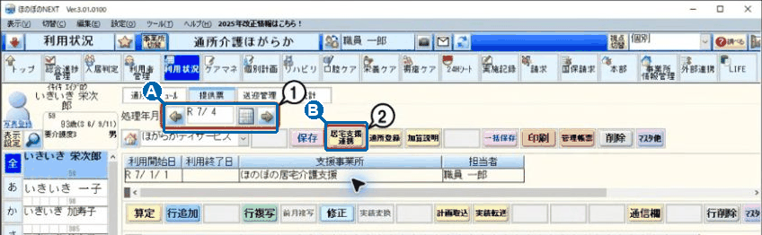
8相手の居宅を選んで「フォルダ」
- A 自分の 提供事業所 を選びます。
- B 相手の 支援事業所番号 を選び、提供年月 を確認します。
- C フォルダ を押します。CSVが相手の居宅ごとに振り分けられます。
- 「フォルダパス」の画面が出たら、閉じて次へ進みます（出た時点で振り分けは終わっています）。
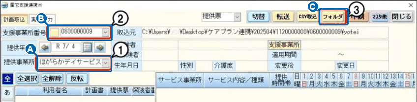
9「CSV取込」→「転送」
- A CSV取込 → はい。結果を見て OK。
- C 出てきた利用者・サービス・日付・回数を確認します。
- B 転送 → 正しければ はい。
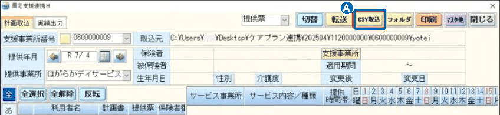
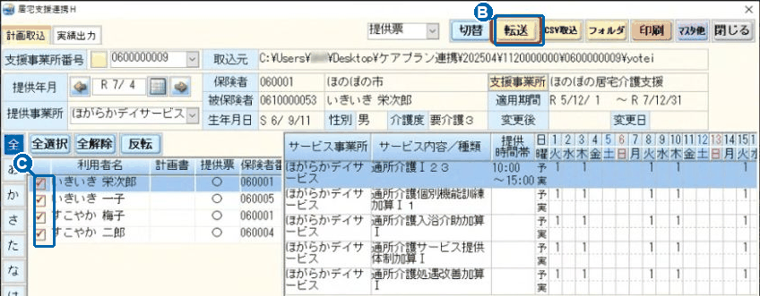
取り込みに失敗したファイルがあるときは、転送せずに原因を確認します。
10（福祉用具だけ）商品を合わせる画面が出たとき
福祉用具以外の事業所は、この手順を飛ばします。
- A 相手の商品に合う、自分の事業所の商品と単位数を確認します。
- B 必要なら、通常・半額などの日割りの区分を確認します。
- C 正しい商品を選んで 確定 を押します。
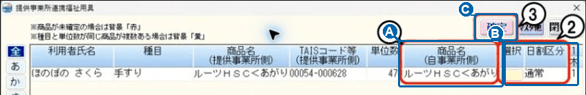
赤＝商品が決まっていない、黄色＝候補が複数。決まっていないまま進めず、わからなければ担当者に確認します。
11提供票の「計画取込」で反映する
- 提供票の画面に戻り、A 計画取込 を押します。
- AB 事業者名を選び、取り込む利用者にチェックします。
- C 取込 を押し、終わったら 閉じる。
- 提供票・スケジュールの日付・サービス・回数が、受け取った内容と合っているか確認します。
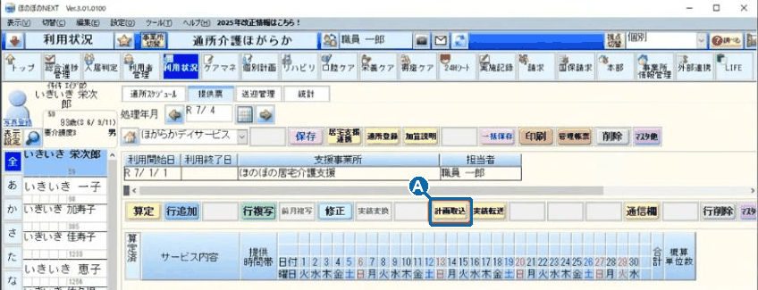
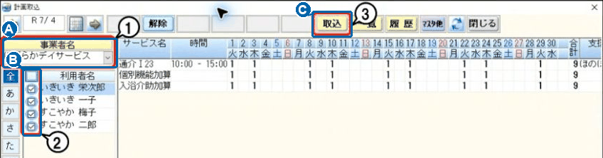
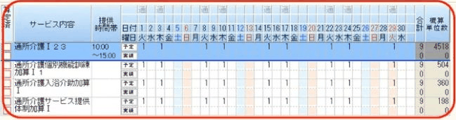
別の居宅の分は、支援事業所番号・提供年月を切りかえて、手順 8 からくり返します。
提供票・スケジュールに予定が入っていれば完了です。
作業
③サービス：実績を送る
サービス ほのぼので実績のデータを作る → 連携システムで送る、の2段階です。
作業②の「CSV取込」→「転送」が済んでいること。対象の月の実績が提供票に入っていること。
居宅から予定を受け取っていない利用者は、実績のデータを作れません。
1. ほのぼので、実績のデータ（CSV）を作る
2「実績出力」で実績を読み込む
- A 実績出力 を選びます。
- BC 自分の提供事業所・送り先の支援事業所番号・提供年月を確認します。
- D 取込 を押し、はい。
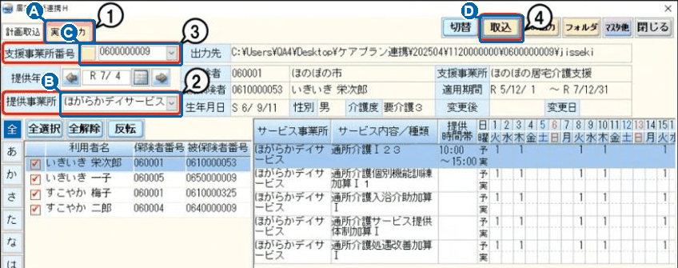
作業②の「CSV取込」とは別のボタンです。利用者が出ないときは、作業②の転送・年月・事業所を確認します。
3内容を確認して「CSV出力」
- A 利用者・サービス・日付・回数を確認します。
- B CSV出力 → 正しければ はい。
- C フォルダ を押すと、できた場所（「jisseki」 フォルダ）がわかります。
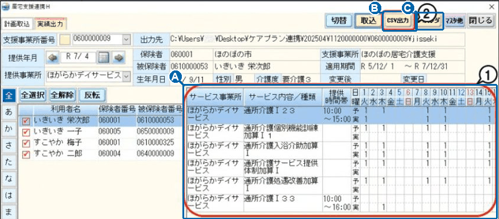
別の居宅の分は、相手を切りかえて手順 2 の 取込 からくり返します。
4できたファイルの場所を開く（オンライン版）
- フォルダのパスをコピーして閉じる を押します。
- 黄色いフォルダの エクスプローラー を開きます。
- 上の アドレスバー で右クリック → 貼り付け → Enter キー。
- 開いた 「jisseki」 フォルダに、UPJSK_ で始まるCSVがあるか確認します。
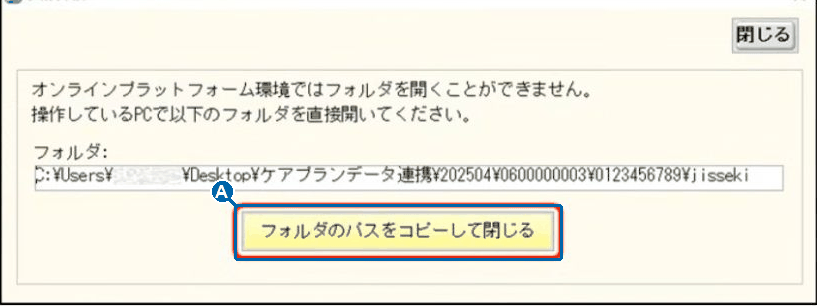
2. 連携システムで送る
最初に 共通のログイン をします。
6送るCSVを選んで「開く」
- A 手順 4 の「jisseki」フォルダを開き、1つの送り先の分だけ 選びます。
- B 選んだファイルを確認して 開く。
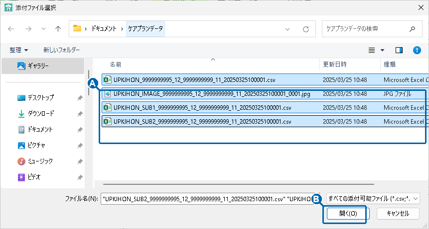
別の月・別の送り先のファイルを混ぜないでください。
7宛先と添付を確認する
- A 自動で入った 送信先事業所番号 が、送りたい居宅の番号と合っているか確認します。
- B 添付が UPJSK_ の実績CSVか、月・送り先が合っているか確認します。
- C 必要なら、メッセージに「○月分 実績」などと入れます。
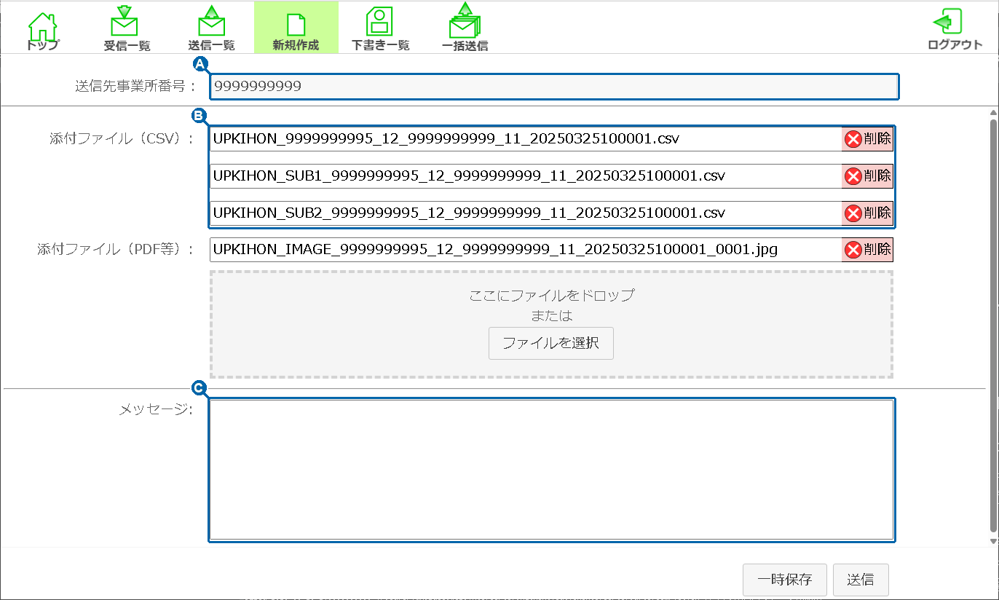
送りません。宛先は手で直せないので、添付をすべて外して、正しいファイルを選び直します。
8「送信」→「OK」
- A 右下の 送信 を押します。
- 「送信確認」で、送り先・ファイル・メッセージをもう一度確認します。
- B 正しければ OK。完了の画面でもう一度 OK。
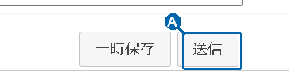
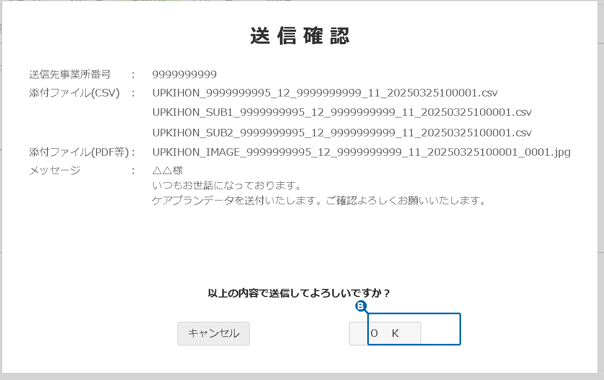
間違いに気づいたら キャンセル で戻ります。
9「送信一覧」で確認する
- A 画面上の 送信一覧 を開きます。
- B 今回の送信日時・宛先・ファイル名を確認します。
- C 相手が受け取ったか見るときは 更新 を押します。
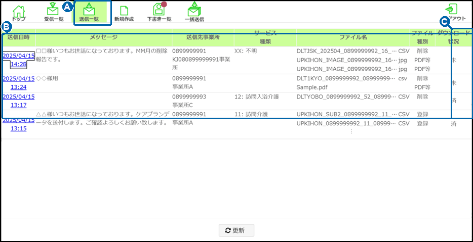
「済」は相手が受け取った（ダウンロードした）ということです。相手のほのぼのに取り込まれたかどうかはわかりません。「未」のままでも、同じデータを何度も送らないでください。
連携システムの 一括送信 で、まとめて送ることもできます（作業① の手順 7〜11 と同じ操作。選ぶのは「jisseki」の実績CSVです）。
送信一覧に正しい宛先で出ていれば完了です。ログアウト して終わります。
作業
④居宅：実績を受け取って、ほのぼのに取り込む
居宅 連携システムで受け取る → ほのぼのに取り込む、の2段階です。
作業①で、その月・その事業所の予定を出力していること（出力していないと、取り込む利用者が出てきません）。
1. 連携システムで受け取る
1作業②の「連携システムで受け取る」と同じ操作をする
作業② の手順 1〜5 と同じです。ちがうのは次の点だけです。
- 送信元が、サービス事業所 になっているか確認する
- 受け取るファイルは UPJSK_ で始まる 実績 のCSV
2. ほのぼのに取り込む
2CSVを「ルートフォルダ」にコピーする
- 受け取ったフォルダの 中のCSVファイル を、ほのぼのの取り込み用の大元のフォルダ（ルートフォルダ）にコピーします。フォルダごとは入れません。
- いくつかの事業所の分を、同じルートフォルダにまとめて入れてかまいません。
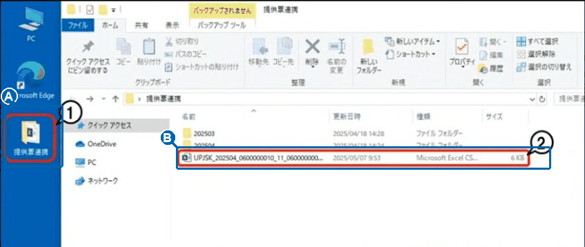
「提供事業所連携H」→ マスタ他 → 動作設定 で確認できます。
4「実績取込」で相手を選んで「フォルダ」
- A 実績取込 を選びます。
- BC 自分の支援事業所と、相手の提供事業所番号を選びます。
- D フォルダ を押します。CSVが「jisseki」に振り分けられます。
- 「フォルダパス」の画面が出たら、閉じて次へ進みます。
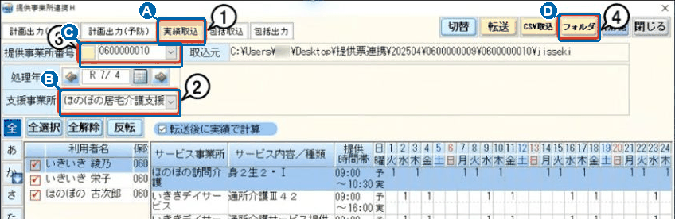
取り込みは、1つのサービス事業所ずつ 行います。
5「CSV取込」→「転送」
- A CSV取込 → はい。結果を見て OK。
- 出てきた利用者・サービス・日付・回数を確認します。
- B 利用票を実績で計算したいときは 転送後に実績で計算 を選びます（事業所の決まりに合わせます）。
- C 転送 → はい。
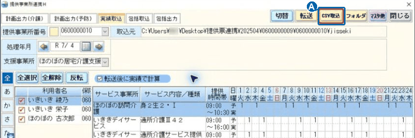
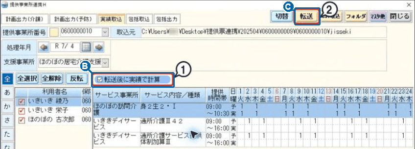
6（福祉用具だけ）商品を合わせる画面が出たとき
- A 相手の商品に合う、自分の事業所の商品と単位数を確認します。
- B 必要なら、通常・半額などの日割りの区分を選びます。
- C 正しい商品に合わせて 確定 を押します。
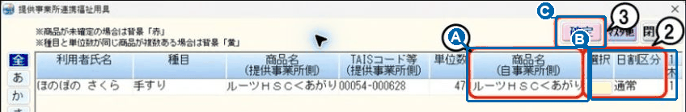
赤＝商品が決まっていない、黄色＝候補が複数。半額・日割りは自動で正しく選ばれるとは限りません。契約の内容に合わせて確認します。
7利用票の実績の欄を確認する
- AB 利用票 に戻り、利用者を選びます。
- C 実績の欄の日付・サービス・回数が、受け取った内容どおりか確認します。
- 別の事業所の分は、提供事業所番号を切りかえて、手順 4 からくり返します。
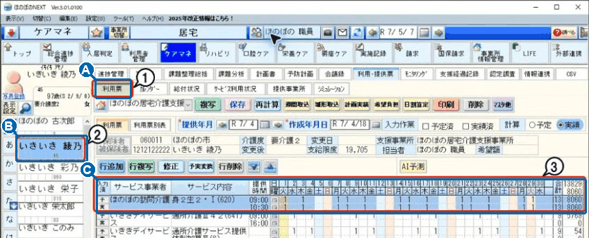
商品や単位数が合っていない可能性があります。自分で消さずに、担当者に確認してください。
利用票に実績が入り、内容を確認できたら完了です。
困った
ときよくあること・連絡先
?よくあること
- ほのぼので利用者が出てこない：年月・自分と相手の事業所・利用票（予定）ができているかを確認します。
- 送信準備ツールが起動しない：「スクリプトの実行が制限」などと出たら、画面の写真を撮って総務部へ連絡してください。
- ツールで赤の行が出る：ほのぼので、その送り先の分をもう一度出力します。
- 連携システムで宛先が違う：送らずに、添付を外してファイルを選び直します。
- 同じデータを2回送ってしまった：自分で何かする前に、相手の事業所と総務部へ連絡してください。
総務部 担当：菊竹
電話：090-8490-7356（平日 9:00〜17:00）
このページの画面は、NDソフトウェア公式サポートQ&A（記事ID 2890・2891・2893・2894）と、公式「ケアプランデータ連携システム操作マニュアル」2026年5月29日版（Ver1.2.0）の操作画面の見本を使い、社内向けにまとめ直したものです（2026年11月7日確認）。